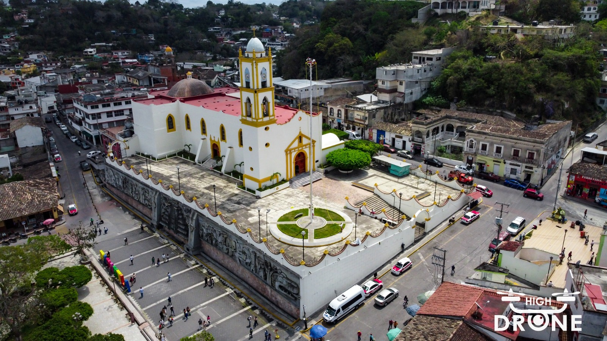
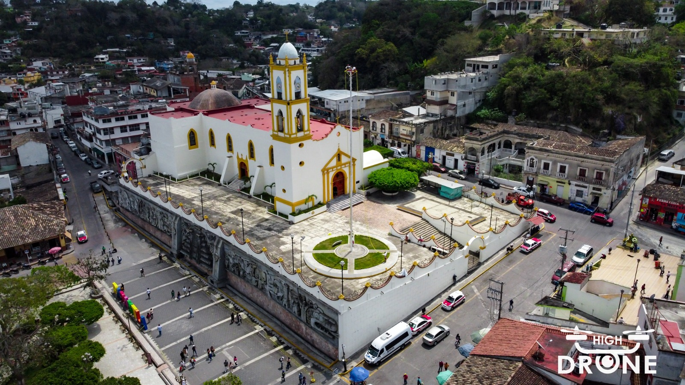

Filmación aérea
Consiste en la captura de imágenes y videos desde el aire utilizando drones profesionales equipados con cámaras de alta resolución. Sin duda alguna es el servicio más popular que requieren la mayoría de los clientes.
Eleva tu imaginación a nuevas alturas


 

Somos una agencia de drones, empresa enfocados en el sector tecnológico del área de drones y en la innovación en la ciudad de Poza Rica de Hidalgo. Somos la única empresa en el estado de Veracruz que ofrece el servicio de reparación y mantenimiento de drones. Generamos diferentes servicios con drones y aplicamos la tecnología a las necesidades que tengan nuestros clientes.
Ser una solución completa en el uso y aplicación de los drones en diferentes sectores, brindando el respaldo y confianza de que los equipos operarán en óptimas condiciones cumpliendo con los objetivos por los cuales fueron creados.
Ser una empresa con impacto social-tecnológico que ayude a democratizar la tecnología drone para su aprovechamiento en las distintas áreas de aplicación, donde tenga un impacto significativo, aplicando mediante los procesos pertinentes la tecnología y sirva de apoyo a las actividades que actualmente se realizan en los distintos sectores, apoyando la economia y fortaleciendo las capacidades desempeñadas.

Consiste en la captura de imágenes y videos desde el aire utilizando drones profesionales equipados con cámaras de alta resolución. Sin duda alguna es el servicio más popular que requieren la mayoría de los clientes.
Este servicio es de los más recientes e innovadores que han surgido en los últimos años, la fumigación con drones se realiza en el campo con el equipo adecuado, se realiza con drones especializados, el equipo de administración se encarga de revisar que se cuente con el equipo suficiente para poder llevar a cabo la fumigación.
Mediante la petición de nuestros clientes nos dedicamos a cotizar con los proveedores tanto el costo del material requerido como de un equipo completo. Al final el departamento de contabilidad y administración trabajan en conjunto para poder enviar la cotización al cliente.

En HIGH DRONE contamos con una amplia gama de cursos en el manejo de drones, los cuales son impartidos por personal profesional capacitado en las áreas de conocimiento, mismos que pueden ser ofrecidos en forma general o personalizada de acuerdo con la solicitud cada cliente.
De los servicios más populares y que frecuentemente se realizan en HIGH DRONE. Nuestro equipo técnico está capacitado para brindar soluciones a todo tipo de drones, especializándose en la marca DJI.
En nuestro servicio de drones de seguridad y vigilancia generamos un plan de patrullaje que nos permita estar en lugares de dificil acceso, así como también estar en varios lugares en tiempos cortos, pudiendo observar y grabar los hechos.
De acuerdo a las capacitaciones que generamos, validamos a diferentes participantes para ofrecer el servicio de renta de drones.


"Un trabajo muy bueno, económico, servicio de calidad, muy cortés y amabilidad, ¡además de su puntualidad!"
"Responsables y comprometidos. Muy buenos trabajos."
"Muy excelente la atención, son una muy buena opción, me ayudaron en mi mando de mi drone y quedó excelente, súper recomendados para toda la banda de Veracruz."
"¡Excelente servicio, muy amables y de buena calidad!"